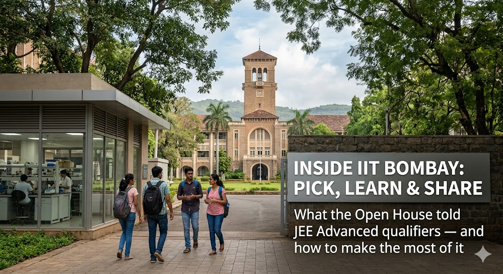

Inside IIT Bombay: What the Open House Told JEE Advanced Qualifiers

IIT Bombay — JEE Advanced Open House
Panel: Director (Energy Science & Engineering), Deputy Director (Mechanical/Cryogenics, ISRO Chandrayaan), Deans of Academic Programs and Student Affairs, and a panel of student mentors.
Note on scope: the panel explicitly said it would not discuss ranks, branch-versus-branch choices, cut-offs or quota — those belong to the JoSAA website. This session was about what IIT Bombay actually offers once you are in.
The one-line takeaway from this session: the moment you join IIT Bombay, it stops being a "branch" and becomes a toolkit — flexible curriculum, open labs, AI everywhere, global exchange. The only real limit is how early you start using it.
IIT Bombay sits on a 550-acre campus with two lakes inside Mumbai, with roughly 13,000 students (about 4,000 undergraduates), 768 faculty, and a worldwide alumni network of around 75,000 — including Nandan Nilekani (the people behind Aadhaar), the films Dangal and Chhichhore, and deep-tech companies like ideaForge.
The leadership's bigger message: IIT Bombay has spent the last few years moving from teaching to learning — about 150 courses redesigned around student effort, with weekly feedback. A line repeated by several speakers: "First, understand yourself." Everything below is built to help you do that.
Section 1: The Big Ideas — In Depth
1.1 Flexibility Has Replaced Branch Change
Formal branch change stopped in 2023 — and was replaced by something more powerful. A B.Tech is approximately 252–276 credits, and 60% is your core branch while 40% is yours to shape through electives, minors, honors, focus tags and dual degrees. You are not locked into the branch you enter.
- A Minor (5 courses in another department) lets you stack a second skill — AI, CS, Economics — that prints on your certificate.
- A Focus tag turns 5 themed courses into a printed specialisation (e.g. "with Focus in AI") without leaving your branch.
- A Dual Degree / IDDP lets a passion you discover in Year 3 become a full second qualification — even across engineering, science and humanities.
- If you are strong, you can finish coursework in 3–3.5 years and use the spare year for a startup or research.
1.2 Research Starts in Year One, Not After Graduation
Labs are open. Any undergraduate can email a professor, walk into a lab, and pick up a small project from the second or third semester. There are formal Undergraduate Research Awards (UR-1, UR-2, UR-3) that add credits and boost your CPI, plus the B.Tech Project (BTP) and Supervised Learning Projects you can register any time.
The scale behind this: IIT Bombay files around 300 patents a year (about 50 licensed), runs a 13-storey Research Park with 60+ companies, a business incubator with ~70 startups, 90+ student–professor startups, and 35+ live projects with ISRO alone (plus DRDO and the Department of Atomic Energy).
You don't wait your turn. Google a professor whose work excites you, request a meeting, and ask to help — that is how UR awards begin.
A good internship or project can convert into your BTP and then into a B.Tech Honours in that area.
If you have an idea, a professor can become your start-up co-founder — and you keep equity.
1.3 'AI + X' — Your Branch Does Not Box You In
The clearest, most repeated message of the session: AI is no longer confined to CSE. The panel framed it as 'AI + X' — AI is a tool taught across mechanical, civil, chemical, bioscience, maths and more, and the scarce, valuable person is the one who pairs AI with deep domain knowledge (the 'X'). Centres like C-MInDS, AI-for-Manufacturing and the sovereign BharatGen project (22 Indian languages) are open to students from any branch.
On AI in your studies: it is allowed — you may use it in assignments and presentations — but you must stand up and present yourself. The skill they want you to build is knowing AI's limits and learning to work on top of it, not under it.
1.4 Global Exposure Is Built In
IIT Bombay has exchange links with up to ~200 universities. You can spend a semester abroad — France, Germany, Monash (Australia), the US — and the credits transfer back. A year-long exchange with the University of Illinois Urbana-Champaign (UIUC) is being expanded toward a possible joint degree, and joint Master's/PhD routes exist with Tohoku (Japan), Monash, Ohio State and Washington University.
1.5 Placement Is the Floor, Not the Ceiling
Placements are taken seriously — but the Deputy Director put it bluntly: "Placement is the least expectation." The institute would rather you aim at research, your own venture, a faculty path or corporate R&D. Internships (after Year 2/3, including on-campus at the Research Park, with a new internship fair) are treated as the real bridge — a strong internship often converts into a pre-placement offer.
Section 2: The Flexibility Toolkit — At a Glance
| Pathway / Feature | What It Is | How to Use It |
|---|---|---|
| 60 / 40 Curriculum | 60% core in your branch, 40% free electives — from STEM or from HASMED (humanities, arts, social science, management, entrepreneurship, design). | Plan electives with intent — they are how you tailor the degree to who you want to become. |
| Minor | 5 courses in another department, starting Year 2. 18 on offer; ~350 students earn one yearly. AI/CS minors are competitive. | Add a second strength (e.g. CS, AI, Economics) that prints on your degree certificate. |
| Honours | 4 advanced courses inside your own branch, also shown on the certificate. | Go deeper where you are already strong. |
| Focus | New Senate-approved tag: 5 courses (30 credits) in one theme — e.g. CS focus areas are AI, security, systems, theory. Rolling out to all departments. | Certificate reads, e.g., 'B.Tech CS with Focus in AI' — specialisation without changing branch. |
| Dual Degree / IDDP | B.Tech + M.Tech in 5 years (Electrical at entry; all others by conversion after Year 3). IDDP allows cross-discipline jumps (engineering, science, humanities). | Decide by third year; conversion is seamless. A late-blooming interest is not a dead end. |
| Safety Nets | Academic Support Program (slower pace if you struggle), B.Sc. exit, semester drops, Academic Bank of Credit, Centre for Multidisciplinary Education (design-your-own BS). | A bad semester is recoverable. The system is built to bend, not break you. |
Section 3: Support, Inclusion & Well-Being
A large part of the session was a promise: nobody is left to sink.
Money Should Not Be the Barrier
- Up to 25% of students get support via merit-cum-means scholarships — free messing, and up to full tuition waiver, with no upfront fee under the new online system.
- Eligibility is your JEE rank plus a parental income certificate. Get that certificate (for FY 2025–26, both parents' income) ready before registration — approvals turn around in a few days.
- Alumni and corporate funds add named scholarships on top; girls' scholarships are sometimes under-subscribed.
Inclusion Is Structural, Not Slogan
- Language: A first-week test identifies students who think in their mother tongue; tailored English courses and mother-tongue tutorials follow.
- PWD cell: Wheelchair access, hearing aids, assistive software, accessible labs, toilets and library support.
- Women: ~125 of 768 faculty are women (highest of any IIT), 25% of deans and 30% of HoDs are women, plus 20% supernumerary seats. Gender is never a restriction.
Well-Being Is Trained, Like a Muscle
- Student Wellness Center: 9 counsellors, hostel-based counsellors, a 24/7 helpline and emergency counselling, with anti-stigma campaigns.
- Flourishing Hub (new, alumni-backed, first of its kind in India): A credited wellness-workshop course in positive psychology — resilience, mindset, life skills and self-awareness, in small batches.
- Their framing: "Academics and grades may get you a job, but life is much more than that."
Section 4: Your First-Year Playbook
In Your First Weeks
- Treat Year 1 as exploration: the Maker Space course (MS101) has you design and 3D-print a working drone or robot — say yes to it.
- Email one professor or walk into one lab whose research excites you. A small project now is a UR award and a paper later.
- Don't pick electives at random — group them toward a Minor or a Focus from the start.
Through the Year
- Learn AI as a layer on top of your domain (AI + X), not as a replacement for learning it.
- Put a semester abroad on your radar early — credits transfer, so it costs you no time.
- Use the Wellness Center or Flourishing Hub before you need them; mindset is a skill, not a fixed trait.
- Guard your time. With this many options, the real risk is doing too much, not too little.
Before You Join — Three Things to Settle
- What do I want from four years here — a job, or a launchpad? (The panel's challenge: treat placement as the floor.)
- If I may need financial support, have I started the parental income certificate (FY 2025–26) so my scholarship clears before registration?
- Which one professor or lab will I email in my first month on campus?
"The structure at IIT Bombay is flexible by design. The limiting factor is not the system — it is how early you start using it."
Three Questions for Your Next Student Session
- When a student says "I want IIT Bombay," have I shifted the conversation from which branch to what do you want to build while you're there?
- Does the student know that AI + X — not just CSE — is where the institution is investing, and that any branch can be a launchpad for AI work?
- For families worried about cost, have I made clear that the scholarship system is substantial — and that the income certificate needs to be ready before registration?